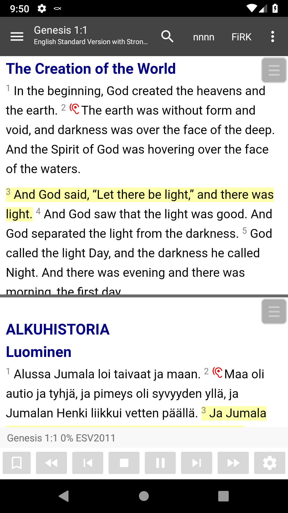
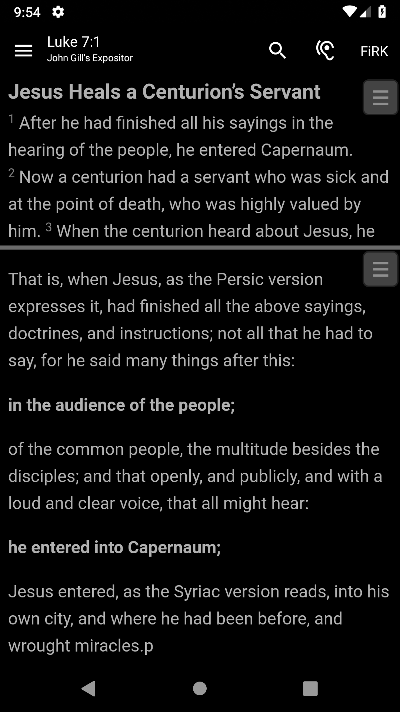
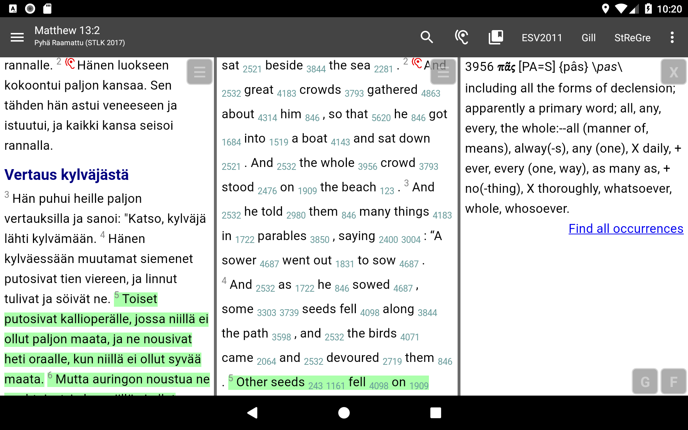

Study the Bible on Your Android Mobile, Tablet or Chromebook
Read the Bible, study commentaries or dictionaries, or read books offline.
Powerful Bible Study tool
Bible Study app by And Bible Open Source Project is a powerful, yet easy to use, offline Bible study application for Android. The app does not aim to be simply a Bible reader, but focuses on being an advanced tool to do in-depth personal Bible study.
This application is developed by Bible readers, for Bible readers. It aims at helping you make your Bible study convenient, deep and fun. The best part about this non-profit community project is that it is open-source, completely free, and contains no advertisements. Having been built from the ground up for Android, it is a small download, and therefore very efficient and remarkably fast.
Powerful Bible Study features
The application has many insightful, original features, that makes a complex and deep Bible study experience smoother than ever. The most notable features are as follows:
- Split text views that enable comparing translations and consulting commentaries
- Workspaces allow multiple Bible study setups with their own settings
- Strong's integration allows Greek and Hebrew word analysis
- Linked cross-references, footnotes, and documents; jump to cross-references and footnotes by simply tapping a link; perform in-depth study of the Scriptures by using hyperlinked commentaries (Gill, Matthew Henry etc.), cross-reference collections (Treasure of Scripture Knowledge, TSKe) and other resources.
- Advanced text to speech with speak bookmarks, enabling a smooth Bible listening experience
- Flexible searching
- Bookmarks, with custom colored bookmark groups
- Personal notes: add your own study notes to any verse of the Bible
- Reading plans: set goals for reading the Bible
- Vast library of documents: Bible translations, theological commentaries, dictionaries, maps, and christian books, totaling over 1500 documents in over 700 languages, legally distributed by Crosswire and other SWORD repositories.
- The provenance of all documents is researched to ensure that all documents can be legally distributed or that permission has been granted by the copyright holder. That is also the reason this app does not include documents like ESV, NIV and NKJV.
- Offline: the only time you need internet is for downloading documents.
Let’s make the best Bible app together!
And Bible is an open-source community project. In practice, this means that anyone with suitable skills can, and is encouraged to, contribute to the project by:
- developing new features,
- testing not-yet-released features,
- keeping user interface translations up-to-date, and
- helping to extend the module library by obtaining permissions from copyright holders, or by converting documents to SWORD format.
If you are a professional software engineer or tester, please consider contributing to the project. For more information on how to contribute, please see https://git.io/JUnaj.
Links
- Like And Bible on Facebook
- Our Youtube Channel
- Frequently Asked Questions (FAQ)
- Project page on Github
Tutorial videos
Screenshots
  
Installation
The easiest way is to download from Google Play Store or Amazon or F-Droid. You may also download APK file from Github releases page and install it manually to your phone.
Getting Help
There are many notes, including an FAQ, on the wiki.
The And Bible Discussion Group allows you to ask questions or discuss And Bible features.
Alternatively e-mail help.andbible@gmail.com
Helping
Translation of user interfaces:
If you would like to contribute a new translation or update an existing translation it is easier now than ever before. We use a simple translation tool named Transifex. To get started, please see our Wiki page for translators.
Suggest features and discuss current feature plans
User experience is important for us. You can be involved in future development by contributing to the feature planning in Github Issue Tracker. You may submit new feature requests or comment on currently planned features.
Bugs:
If you find a problem then please report it in the And Bible Issue Tracker. If you can analyze, debug or even conribute a fix that would be even better.
Enhancements:
Code enhancements are welcome for review and possible inclusion in the next build. Please email And Bible Support to discuss development work you are considering.